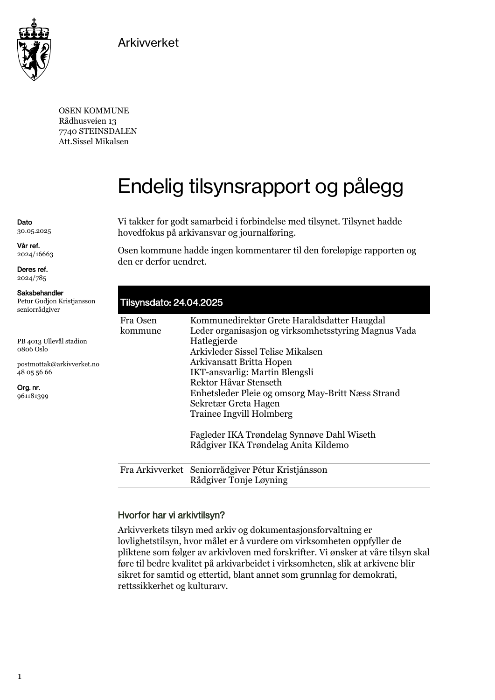
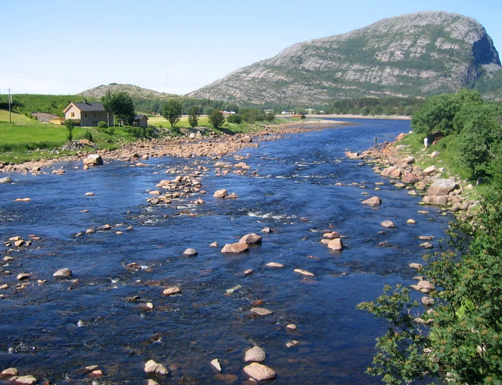
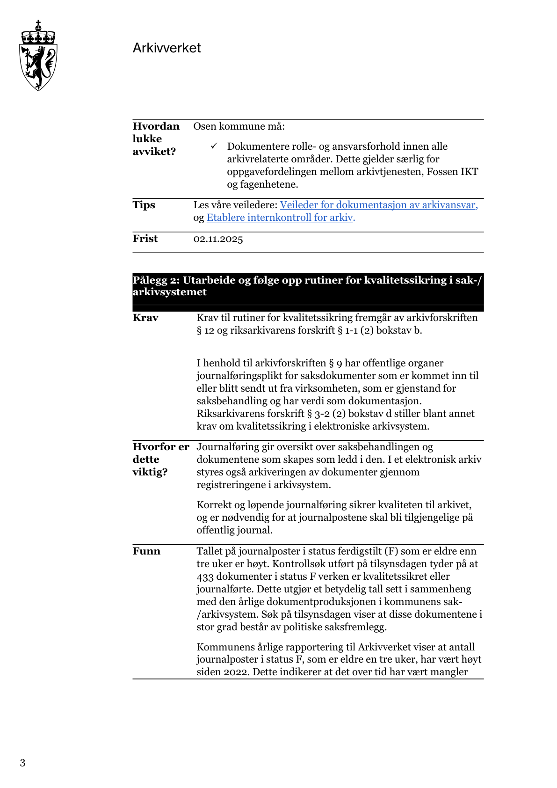
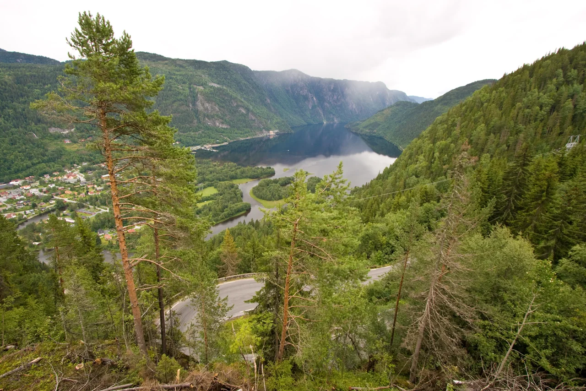
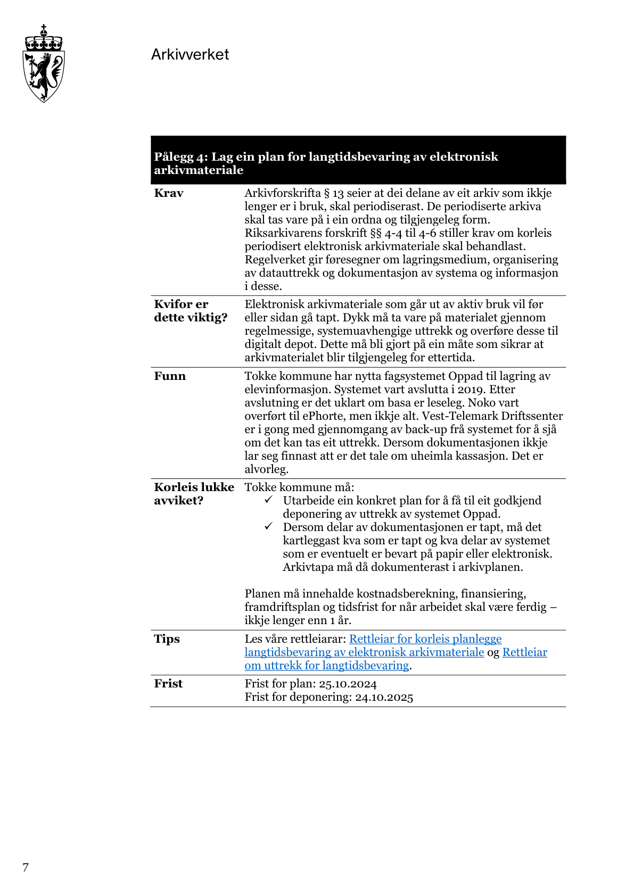
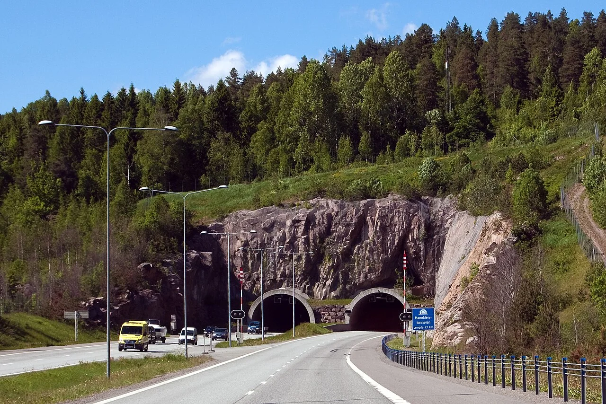
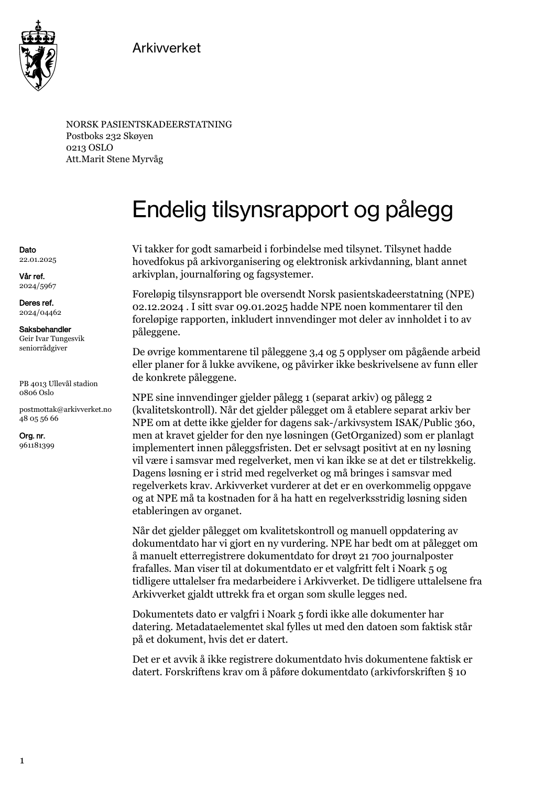
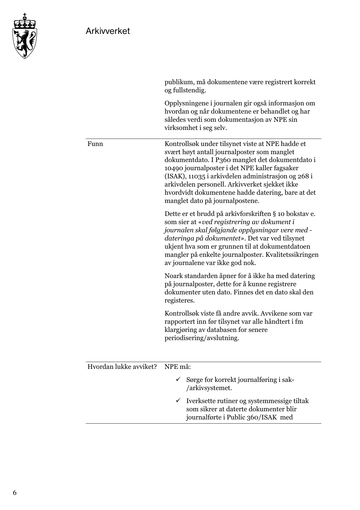

Begrunn valgene
Finn grunnlaget, forklar prioriteringene og lær av det som er gjort.
ARKIVLOVA · OFFENTLEGLOVA · GOD FORVALTNING
God dokumentasjon. Tryggere ledelse.
Når virksomheten tar vare på sporene og behandler innsyn riktig, får du et bedre grunnlag for å lede.
Finn grunnlaget, forklar prioriteringene og lær av det som er gjort.
Gjør beslutninger etterprøvbare og gi innbyggerne mulighet til å følge med.
Sørg for at opplysninger kan finnes og brukes når noen trenger å dokumentere sin sak.
La neste kollega finne svar, også etter et systembytte eller et lederskifte.
Gevinstene er museets faglige tolkning av hva god dokumentasjonsforvaltning kan bidra til. Arkivlova og offentleglova knytter dokumentasjon og åpenhet til kontroll, rettssikkerhet og tillit. God innsynsbehandling innebærer også å ivareta taushetsplikt og personvern.
ei forsvarleg og etterretteleg offentleg forvaltning
Arkivlova · formålet med lova · § 1 ↗
tilliten til det offentlege og kontrollen frå ålmenta
Offentleglova · formål · § 1 ↗
Fem virkelige saker. Fem spor du må forstå.
Samme fortellinger, ledervalg og romprøver som i den interaktive reisen. Her kan du lese, svare og åpne forklaringene uten JavaScript. Merker og fremdrift lagres bare i den interaktive utgaven.
Et uavhengig formidlingsprosjekt i Rolf Selås’ prosjektsamling. Ikke en offisiell utstilling fra de omtalte virksomhetene. Historiske kilder, tenkte øvelser og museets tolkninger holdes adskilt.
DETTE KAN DU VINNE SOM LEDER
Når journalen gir et dekkende bilde av sakene, blir det lettere å møte spørsmål med dokumentasjon og vise hvordan virksomheten bruker myndigheten sin.
Et dokument kan være ferdig uten at offentligheten finner sporet etter det. I Osen tydet kontrollsøket i 2025 på at 433 ferdigstilte dokumenter, eldre enn tre uker, verken var kvalitetssikret eller journalført. Mange var politiske saksfremlegg. Arbeidet hadde kommet langt. Den siste overgangen var ikke fulgt godt nok opp.
Arkivverket · Side 3–4, pålegg 2 ↗
«Ferdigstilt» var blitt stående som endestasjon. Men en ferdig fil og en korrekt journalpost er ikke det samme.

På bordet ligger én oppdiktet sak. Før journalposten gjennom kontrollene, og prøv deretter om noen utenfor fagmiljøet kan finne den.
Kontroller type, tittel og skjerming
Riktig dokumenttype, forståelig tittel og vurdert skjerming gjør posten klar for journalføring.
Journalfør den kontrollerte posten
Nå finnes et ordnet spor. Det er ikke det samme som å publisere hele dokumentet uten en innsynsvurdering.
Prøv et journalsøk
Et søk er sluttkontrollen. Først må metadata kontrolleres og posten journalføres.
Nå gir søket treff på øvingsposten. Dokumentet ble ikke mer ferdig. Sporet ble mulig å finne.
Du leder en fiktiv kommune. En journalist spør etter grunnlaget for et politisk vedtak. Saksbehandleren sier at dokumentet er ferdig. Hvor stopper sporet?
Åpne et valg for å se mulige følger. Disse forløpene er tenkte, ikke gjengivelser av virkelige hendelser.
Rask beskjed. Bruker dagens rutine.
Dokumentene ferdigstilles. Overgangen til journalføring har fortsatt ingen tydelig oppfølging.
Journalisten må kjenne til dokumentet på forhånd for å spørre etter det.
Ledelsen har fått bekreftet aktivitet, men har ikke kontrollert resultatet.
Krever tid fra fagenhet og arkivtjeneste.
Fagenheten og arkivtjenesten avklarer oppgaver, dokumenttyper og frist.
En konkret sak kontrolleres fra mottak til korrekt journalpost. Skjermingsbehov vurderes.
Restanser og avvik følges opp. En ny person kan finne saken og relevante spor.
Hjelper journalisten nå. Løser én henvendelse.
Publisering kan hjelpe i denne saken, etter nødvendig innsyns- og skjermingsvurdering.
Mottatte dokumenter med feil type blir ikke rettet av at saksfremlegget legges ut.
En enkeltsak er hjulpet. Restansen og ansvaret for kvalitetssikring må fortsatt håndteres.
Ferdig er en arbeidsstatus. Gjenfinnbarhet må kontrolleres.
Bestill et jevnlig kontrollsøk etter ferdigstilte poster som venter på journalføring. Avtal hvem som følger dem opp.
Museets faglige tolkning.Ferdigstilte dokumenter var ikke fulgt frem til kvalitetssikret journalføring.
Riktig. Bruddet lå i overgangen fra ferdig arbeid til et ordnet, søkbart spor.
Rapporten beskrev manglende kvalitetssikring og journalføring, ikke sletting.
Saken gjaldt bruken og oppfølgingen av systemet, ikke at et system manglet.
Be om et kontrollsøk og en navngitt ansvarlig for restansene.
Riktig. Du bestiller et kontrollerbart resultat, ikke bare mer aktivitet.
Ferdigstatus var ikke nok. Bestill kontroll av det neste leddet.
Journalføring og full publisering er forskjellige ting. Skjerming og innsyn må vurderes.
Be om en oversikt over ferdigstilte, ikke journalførte dokumenter. Avklar eier for oppfølgingen og prøv gjenfinning i én sak.
Be om å få se: En kontrollert sak og en restanseoversikt med ansvarlig og oppfølgingsdato.
Ansvarlig rolle: ____________________ Oppfølging: ____________________
Dokumentene var i stor grad politiske saksfremlegg. Noen eksternt mottatte dokumenter var feilaktig registrert som interne x-notater.
Arkivverket · Side 3–4, pålegg 2 · factManglene svekket journalens funksjon som inngang til dokumentene. Rapporten dokumenterer ikke at alle dokumentene var utilgjengelige gjennom andre kanaler.
Arkivverket · Side 3–4, pålegg 2 · factKommunen fikk pålegg om å følge opp journalføring og korrekt registrering, og gjøre rutinene kjent for saksbehandlere og ledere.
Arkivverket · Side 3–4, pålegg 2 · factTilsynet anvendte arkivforskriften fra 2017, blant annet § 9. Henvisningen gjelder 2025, ikke dagens paragrafnummer.
Arkivverket · Side 3–4, pålegg 2 · factNå regulerer arkivforskrifta §§ 14–15 journalplikt og løpende registrering av metadata.
Lovdata · §§ 14–15 · fact

Dette er tilstanden ved tilsynet i 2025. Senere retting er ikke undersøkt.
Rapportens henvisning til «1999 nr. 126» er en skrivefeil; den tidligere arkivloven er fra 1992.
433 dokumenter i status F verken er kvalitetssikret eller journalførte.
Du har gjort et spor synlig. I neste rom finnes filene kanskje fortsatt — men kan noen åpne dem?
DETTE KAN DU VINNE SOM LEDER
Når dokumentasjonen kan leses etter et systembytte, kan virksomheten finne svar uten å være avhengig av den som husker den gamle løsningen.
Et systembytte skal gjøre hverdagen enklere. Men det gamle systemet rommer også det nye ikke nødvendigvis har fått med seg. Tokke avsluttet elevsystemet Oppad i 2019. Ved tilsynet i 2024 var det uklart om databasen fortsatt kunne leses. Noe var overført til ePhorte, men ikke alt. Sikkerhetskopier ble undersøkt.
Arkivverket · Side 7, pålegg 4 ↗
En kopi kan eksistere uten at noen har vist at informasjonen lar seg hente ut og forstå.

Du skal godkjenne stenging av et oppdiktet elevsystem. Ikke stol på lampen merket «backup». Prøv det som skal overleve systemet.
Åpne et testuttrekk
En lesetest er sterkere bevis enn en melding om at sikkerhetskopieringen kjørte.
Kontroller innhold og sammenheng
Undersøk at dokumenter, metadata og nødvendige koblinger er bevart, ikke bare én tilfeldig fil.
Avtal mottak, ansvar og gjenfinning
Noen må overta både materialet og ansvaret. Avtalen erstatter ikke testing av innholdet.
I modellen kan en ny medarbeider nå åpne materialet og følge sammenhengen. Bevaringen er prøvd før stenging — ikke bare lovet.
Et gammelt elevsystem skal avvikles i din fiktive virksomhet. Leverandøren har sendt en kopi. En tidligere elev trenger dokumentasjon om tilrettelegging. Kan noen finne den etter systemskiftet?
Åpne et valg for å se mulige følger. Disse forløpene er tenkte, ikke gjengivelser av virkelige hendelser.
Lav innsats nå. Ingen brukstest.
Dere har flere kopier, men vet fortsatt ikke om elevsaken kan hentes frem.
Den tidligere systemansvarlige har sluttet. Ingen vet hvilket verktøy som åpner dataene.
Virksomheten må forsøke gjenfinning før den kan forklare hva som faktisk ble dokumentert.
En teknisk test. Faglig innhold er ikke kontrollert.
En teknisk kontroll passerer. Ingen har fulgt en hel elevsak.
Et dokument kan være lesbart uten at man vet hvilken sak eller person det hører til.
Fagenheten må lete på tvers av filer. Tilgang alene var et for snevert godkjenningskriterium.
Kan kreve utsatt stenging og avsatt arbeidstid.
IT, fag og arkiv avtaler hva som må være prøvd og hvem som godkjenner resultatet.
Utvalgte saker gjenfinnes i mottaksløsningen, og innholdet avstemmes. Avvik håndteres.
Virksomheten har et dokumentert utgangspunkt for å hente frem saken etter systemskiftet.
En sikkerhetskopi er ikke et bevis på brukbar bevaring.
Gjør dokumentert uttrekk, lesetest og avklart mottaksansvar til vilkår i planen for systemavvikling.
Museets faglige tolkning.Lesbarheten var uavklart ved tilsynet; endelig tap er ikke fastslått.
Riktig. Risiko og dokumentert tap må holdes fra hverandre.
Det går lenger enn rapporten. Manglende avklaring er ikke bevis for endelig tap.
En kopi må kunne brukes. Tilsynet beskrev at dette fortsatt ble undersøkt.
Et dokumentert, kontrollert uttrekk og avklart ansvar for videre tilgang.
Riktig. Kontroller innhold, sammenheng og lesbarhet, og avtal videre forvaltning.
Det er en opplysning om en kopi, ikke dokumentasjon på et brukbart arkiv.
En frist gjør avklaringen viktigere; den gjør ikke bevaringen tryggere.
Velg ett system som skal avvikles. Bestill en dokumentert prøve av gjenfinning, fullstendighet og lesbarhet før stenging.
Be om å få se: Godkjent prøveprotokoll fra fag, IT og arkiv, med åpne avvik og ansvarlige.
Ansvarlig rolle: ____________________ Oppfølging: ____________________
Noe var overført til ePhorte, men ikke alt. Driftssenteret undersøkte sikkerhetskopier for å se om et uttrekk var mulig.
Arkivverket · Side 7, pålegg 4 · factTilgangen til gjenværende elevinformasjon var uavklart. Rapporten fastslår ikke at alt innhold var tapt.
Arkivverket · Side 7, pålegg 4 · riskKommunen måtte planlegge et godkjent uttrekk og kartlegge eventuelle tap. Arkivverket understreket at manglende gjenfinning ville innebære uhjemlet kassasjon.
Arkivverket · Side 7, pålegg 4 · factPålegget bygget på arkivforskriften fra 2017 og Riksarkivarens forskrift om uttrekk og bevaring.
Arkivverket · Side 7, pålegg 4 · factArkivforskrifta §§ 5–7 gjelder systemfunksjoner, systembeskrivelser og vedlikehold av digitale arkiv.
Lovdata · §§ 5–7 · fact
Dette er en dokumentert bevaringsrisiko, ikke bevis for endelig tap. Senere gjenfinning eller retting er ikke undersøkt.
Etter avslutning er det uklart om basa er leseleg.
Et arkiv må kunne åpnes. Men selv lesbare dokumenter kan bli ubrukelige når forbindelsen mellom dem mangler.
DETTE KAN DU VINNE SOM LEDER
Når vurderingene følger saken, kan du forklare hvorfor svaret ble som det ble. Den som overtar eller behandler en klage, får et grunnlag å arbeide videre med.
Et avslag er ikke slutten på en sak når noen klager. Den som skal kontrollere avgjørelsen, trenger også sporene frem til den. I en sak fra 2008 fikk Sivilombudsmannen ikke oversendt innsynsbegjæringen og det første avslaget. Departementet ga dessuten uriktig informasjon om arkivrutinene. Dokumenter og kunnskap om rutinene fulgte ikke kontrollen slik de skulle.
Sivilombudsmannen (nå Sivilombudet) · Oppsummering og ombudsmannens uttalelse ↗
Kontrollen ble hindret når de nødvendige dokumentene ikke ble funnet frem og oversendt.
Sett sammen en oppdiktet innsynssak slik at en ny saksbehandler kan følge den. Legg kortene i en meningsfull rekkefølge. Dette er ikke en påstand om journalplikt for alle innsynskrav i dag.
Det opprinnelige innsynskravet
Kravet viser hva personen faktisk ba om.
Vurdering av kravet
Vurderingen knytter spørsmålet til avgjørelsen og gjør behandlingen forståelig.
Avgjørelse med begrunnelse
Avgjørelsen gir utfallet. For å forstå den trenger vi først kravet og vurderingen.
Klage på avgjørelsen
Klagen kommer etter en avgjørelse. En kontrollør trenger også sporene som leder frem til den.
Nå kan en utenforstående følge kjeden fra spørsmål til klage. Øvelsen bevarer sammenheng — ikke bare enkeltfiler.
I en fiktiv innsynssak har en søker klaget på et avslag. Saksbehandleren er borte. Du skal sørge for at klagebehandlingen kan følge vurderingene. Hva trenger dere?
Åpne et valg for å se mulige følger. Disse forløpene er tenkte, ikke gjengivelser av virkelige hendelser.
Krever en konkret gjennomgang av saken.
Avgjørelse, vurderinger og klage kobles. Journalførings- og arkivbehov vurderes etter gjeldende regler.
Det fremgår hva som finnes, hva som mangler og hvilke opplysninger som må innhentes.
En kollega som ikke deltok, kan følge saksbehandlingen og forstå begrunnelsen.
Raskt, men bygger på hva noen husker.
Kollegaen gir sin erindring. Den er ikke det samme som en samtidig dokumentert vurdering.
Det er vanskelig å skille hva som var vurdert da, fra hva man mener nå.
Virksomheten har ikke sikret en rutine som gjør saksforløpet etterprøvbart.
Dokumenterer utfallet. Kan mangle saksforløpet.
Klagebehandlingen får selve avslaget.
Uten relevante dokumenter og vurderinger kan det være nødvendig med mer innhenting.
Virksomheten har fortsatt ingen samlet fremstilling av sakens spor.
Et vedtak er ikke etterprøvbart bare fordi vedtaksfilen finnes.
Be en medarbeider som ikke kjenner saken, finne frem grunnlaget, avgjørelsen og klagesporet. Kontroller også at rutinene er kjent.
Museets faglige tolkning.Nødvendige dokumenter ble ikke oversendt, og opplysningene om rutinene var uriktige.
Riktig. Både dokumentene og kunnskap om hvordan de finnes, har betydning.
Det er ikke det denne saken viser. Spørsmålet her er om behandlingen kunne etterprøves.
Den siste e-posten erstatter ikke det opprinnelige kravet og behandlingen.
Etterprøvbarhet er viktig, men dagens konkrete plikter må vurderes etter dagens regler.
Riktig. Lærdommen består uten at gamle paragrafhenvisninger gjøres til dagens rett.
Det kan ikke sluttes fra 2008-saken. Skill mellom arkivplikt, journalplikt og gjeldende unntak.
Historien viser hvorfor sammenheng og kjente rutiner betyr noe, selv når regelverket endres.
Ta én avsluttet innsynsklage. Be en kollega følge avgjørelse, begrunnelse, klage og oversendelse uten muntlig hjelp.
Be om å få se: Et dokumentert gjenfinningsforsøk og en avklart rutine for sakstypens arkivering og journalføring.
Ansvarlig rolle: ____________________ Oppfølging: ____________________
Departementet ga også uriktige opplysninger om sine arkivrutiner.
Sivilombudsmannen (nå Sivilombudet) · Oppsummering og ombudsmannens uttalelse · factOmbudsmannen fikk ikke dokumentene og opplysningene han hadde krav på.
Sivilombudsmannen (nå Sivilombudet) · Oppsummering og ombudsmannens uttalelse · factOmbudsmannen kritiserte både journalføringen og at arkivrutinene ikke var godt nok kjent blant de ansatte.
Sivilombudsmannen (nå Sivilombudet) · Oppsummering og ombudsmannens uttalelse · factUttalelsen anvendte daværende arkivforskrift § 2-6. Vurderingen gjelder reglene i 2008.
Sivilombudsmannen (nå Sivilombudet) · Oppsummering og ombudsmannens uttalelse · factI 2026 unntar arkivforskrifta § 14 tredje ledd vanlige innsynssaker fra journalplikt, med unntak blant annet for nærmere begrunnelse, klage, betaling og hvordan innsyn gis. Arkivplikt må vurderes særskilt.
Lovdata · § 14 tredje ledd · fact2008-uttalelsen kan ikke brukes som påstand om at alle innsynskrav er journalpliktige i dag.
i strid med gjeldende regelverk
Her trengte en kontrollør hele saksgangen. I neste rom handler kontrollen om noe som ligger skjult bak en tunnelvegg.
DETTE KAN DU VINNE SOM LEDER
Når opplysninger om utført arbeid er tilgjengelige, blir det lettere å planlegge vedlikehold, stille krav og oppdage hva virksomheten fortsatt trenger å undersøke.
25. desember 2006 raste deler av Hanekleivtunnelen. Granskningen måtte undersøke både berget, sikringen og hvordan arbeidet var fulgt opp. Dokumentasjon om omfang og plassering av utført sikring var ikke lenger tilgjengelig. Det var ett av flere funn i et sammensatt årsaksbilde — ikke bevis for at arkivtap alene utløste raset.
Samferdselsdepartementet · Kapittel 3.13, undersøkingsgruppa sine konklusjonar, punkt 6 ↗
Overflaten kunne sees. Kunnskapen om det som var gjort bak den, kunne ikke kontrolleres på samme måte når dokumentasjonen manglet.

Du overtar en oppdiktet teknisk leveranse. Undersøk modellen lag for lag. Hvilke to underlag gir drift et bedre grunnlag for å forstå det som er skjult?
Kart over utført sikring
Et kart knytter utført arbeid til et konkret sted. I modellen blir punktene bak veggen synlige.
Utførelses- og kontrollgrunnlag
Sammen med plasseringen viser grunnlaget hva som er utført og hvordan det er kontrollert.
Kart og kontrollgrunnlag er nå koblet til modellen. Det gjør kunnskapen synlig; det beviser ikke at en virkelig tunnel er sikker.
Du leder et fiktivt byggeprosjekt. Entreprenøren melder ferdig. Drift spør hvor den utførte sikringen er dokumentert. Anlegget ser i orden ut. Hva må du få se?
Åpne et valg for å se mulige følger. Disse forløpene er tenkte, ikke gjengivelser av virkelige hendelser.
Holder milepælen. Utsetter dokumentasjonsarbeidet.
Noe underlag mangler. Ansvar for restansene må fortsatt avklares.
Det kan bli vanskeligere å få tak i underlaget og dem som kjenner arbeidet.
Manglende underlag kan kreve nye undersøkelser før fagfolk kan gjøre en forsvarlig vurdering.
Bruker tid ved overlevering. Synliggjør avvik.
Drift forsøker å finne utført arbeid, kontrollspor og avvik. Relevant fagkompetanse vurderer innholdet.
Leveransen og åpne avvik dokumenteres. Sikkerhetsvurderinger gjøres av ansvarlige fagfolk.
Drift har et bedre grunnlag for kontroll. Dokumentasjon alene garanterer ikke et sikkert anlegg.
Samler materialet. Ingen kontroll av sammenheng.
Det er fortsatt uklart hvilke versjoner som viser utført arbeid.
En ny medarbeider kan ikke uten videre vite hvilken tegning som gjelder.
Drift må rydde og verifisere underlaget før det kan brukes.
Leveransen er også kunnskapen som gjør den mulig å kontrollere.
Definer dokumentasjon og prøvd gjenfinning som en del av overleveringen — ikke som opprydding etter prosjektet.
Museets faglige tolkning.Utilgjengelig sikringsdokumentasjon var ett av flere funn i granskningen.
Riktig. Dokumentasjonsfunnet må ikke blåses opp til en eneårsak.
Det hevder ikke granskningen. Årsaksbildet var teknisk og sammensatt.
Et arkiv er et kontrollgrunnlag, ikke en garanti for sikkerhet.
Be om dokumentasjon av utførelsen og prøv at mottakeren kan finne og forstå den.
Riktig. Overlever også kunnskapen som drift og kontroll trenger.
Et bilde erstatter ikke nødvendigvis kunnskap om skjulte forhold.
Da kan de som kjenner arbeidet være borte og kontrollgrunnlaget vanskeligere å etablere.
Gjør dokumentasjon til et akseptansekriterium ved overlevering. La drift prøve å finne underlaget for én konkret del av leveransen.
Be om å få se: En overleveringsprotokoll med kontrollert underlag, avvik, eier og frist.
Ansvarlig rolle: ____________________ Oppfølging: ____________________
Departementets gjengivelse av granskningen sier at ingeniørgeologiske forhold ikke var systematisk kartlagt. Dokumentasjon om omfang og plassering av utført sikring var ikke lenger tilgjengelig.
Samferdselsdepartementet · Kapittel 3.13, undersøkingsgruppa sine konklusjonar, punkt 6 · factGranskningen avdekket mangler i sikring og kontroll. Utilgjengelig dokumentasjon var ett av flere funn; den fastslår ikke at arkivtap alene utløste raset.
Samferdselsdepartementet · Kapittel 3.13, undersøkingsgruppa sine konklusjonar, punkt 6 · factOppfølgingen omfattet strengere krav til dokumentasjon og kvalitetssikring ved tunnelanlegg.
Samferdselsdepartementet · Kapittel 3.13, undersøkingsgruppa sine konklusjonar, punkt 6 · factDette er en teknisk granskningshistorie. Utstillingen hevder ikke at det forelå et brudd på arkivloven.
Samferdselsdepartementet · Kapittel 3.13, undersøkingsgruppa sine konklusjonar, punkt 6 · factArkivlova § 5 understreker sikring av informasjon, opphav og sammenheng. Koblingen til sikker overlevering her er museets faglige tolkning.
Lovdata · § 5 · interpretationArtikkelen presenterer undersøkelsesgruppens funn. Den omtaler både geologi, sikring, bemanning og dokumentasjon.
Kuratert overskriftsutdrag. Veggpanelet er museets utforming, ikke en faksimile av nettsiden.
forskning.no · 2007-02-15 ↗Presseomtale av Norsk Presseforbunds klage om innsyn i dokumenter fra byggingen av tunnelen.
Kuratert overskriftsutdrag. Dette er en egen innsynsklage, ikke Sivilombudsmannens sak 2008/171 i naborommet.
VG / NTB · 2007-02-22 ↗Vi bygger på departementets publiserte gjengivelse av undersøkelsesgruppens funn.
Modellen er abstrakt og viser ikke tunnelens faktiske geologi eller sikring.
denne dokumentasjonen er ikkje lenger tilgjengeleg
Kunnskap må følge leveransen. I siste rom prøver du hvor mye sammenheng som kan ligge i ett lite datofelt.
DETTE KAN DU VINNE SOM LEDER
Når datoer og andre metadata gir sammenheng, blir det lettere å følge saken, kontrollere behandlingen og finne opplysningene som betyr noe for den enkelte.
Når mange dokumenter skal finnes og forstås, gjør opplysningene rundt dem en stor del av arbeidet. Ved tilsynet hos Norsk pasientskadeerstatning i 2024 manglet dokumentdato på mange journalposter. Det betyr ikke at dato manglet i selve dokumentene. Arkivverket omtalte arkivholdet som generelt godt og vurderte manglene som løsbare.
Arkivverket · Side 1–3 og 6–7, pålegg 2 ↗
Dokumentets dato, mottaksdato og registreringsdato beskriver forskjellige hendelser. Et tomt eller feil felt kan skjule den forskjellen.

Dette er et oppdiktet brev, ikke en pasientsak. Brevet er datert 20. november, mottatt 22. november og registrert 23. november. Sett riktig dato på riktig hendelse.
20. november
Det er datoen på selve brevet i øvelsen.
22. november
Det er mottaksdatoen i øvelsen. Den er forskjellig fra brevets dato.
23. november
Det er registreringsdatoen i øvelsen. Den forteller når posten ble opprettet.
Nå viser tidslinjen tre hendelser, ikke tre konkurrerende svar på samme spørsmål. Metadataene gir filen sammenheng.
Du leder en fiktiv saksenhet. En kollega skal rekonstruere et saksforløp, men flere journalposter mangler dokumentdato. Filene finnes. Hvordan undersøker dere kvaliteten?
Åpne et valg for å se mulige følger. Disse forløpene er tenkte, ikke gjengivelser av virkelige hendelser.
Rask opprydding. Kan blande ulike datoer.
Ingen felt er tomme. Det er fortsatt uklart om datoene betyr det de skal.
En kollega kan tolke registreringsdato som dokumentets dato uten å kjenne endringen.
Virksomheten må dokumentere endringen og kontrollere om metadataene er blitt misvisende.
Ingen innsats nå. Årsak og betydning forblir uklare.
Et tomt datofelt betyr ikke at dokumentet er tapt eller at avgjørelsen er feil.
Uten å undersøke årsaken kan nye poster få samme mangel.
Ledelsen vet fortsatt ikke hvilke tiltak som er nødvendige eller hensiktsmessige.
Krever faglig vurdering og prioritering.
Et utvalg sammenholdes med originalene og relevante metadata. Årsaken undersøkes.
Behovet for etterregistrering vurderes konkret. Metode og endringer dokumenteres.
Nye poster kontrolleres. Resultatet viser om rutinene og systemoppsettet virker.
Bevar ikke bare filen. Bevar det som gjør den forståelig.
Kontroller metadata med stikkprøver, prioriter etter risiko, og bruk funnene til å forbedre arbeidsflyten.
Museets faglige tolkning.Manglende dokumentdato på journalposter, ikke dokumenterte feil i erstatningsvedtak.
Riktig. Et metadatafunn må ikke gjøres til en udokumentert påstand om skade.
Arkivverket undersøkte ikke om selve dokumentene hadde dato.
Rapporten dokumenterer ikke dette. Hold avvik og påståtte følger fra hverandre.
Registrer datoene som forskjellige hendelser etter hva de faktisk beskriver.
Riktig. Metadata skal forklare dokumentet og saksbehandlingen, ikke bare fylle felter.
Da forsvinner forskjellen mellom hendelsene. Likhet er ikke det samme som kvalitet.
Datoene er ikke nødvendigvis motstridende. De beskriver ulike hendelser.
Bestill en stikkprøve av datoer, dokumenttyper og sakskoblinger. Avklar årsak, betydning og sporbar metode før masseretting.
Be om å få se: En begrunnet kvalitetsvurdering og kontroll av at nye poster registreres riktig.
Ansvarlig rolle: ____________________ Oppfølging: ____________________
Kontrollsøket fant 10 490 slike poster i fagsaker, 11 035 i administrasjon og 268 i personell. Arkivverket undersøkte ikke om selve dokumentene hadde dato.
Arkivverket · Side 1–3 og 6–7, pålegg 2 · factArkivverket vurderte det som mindre sannsynlig at manglende dokumentdato vesentlig forringet arkivkvaliteten. Rapporten dokumenterer ikke feil i erstatningsvedtak.
Arkivverket · Side 1–3 og 6–7, pålegg 2 · factArkivverket krevde korrekt registrering av daterte dokumenter. Etter NPEs innvendinger fikk virksomheten vurdere behovet for etterregistrering. Arkivholdet ble omtalt som generelt godt.
Arkivverket · Side 1–3 og 6–7, pålegg 2 · factVurderingen bygget blant annet på arkivforskriften fra 2017 § 10 bokstav e.
Arkivverket · Side 1–3 og 6–7, pålegg 2 · factArkivforskrifta § 15 regulerer metadata i journalen, inkludert dokumentdato eller dato for sending/mottak og tidspunkt for registrering.
Lovdata · § 15 · fact
Manglende dato på journalposten er ikke det samme som et udatert originaldokument.
Dette er historiske funn. Status for senere utbedring er ikke undersøkt.
Manglene vi fant er løsbare.
Du har samlet fem deler av samme svar: finne, lese, etterprøve, kontrollere og forstå. Nå skal du bruke dem sammen.
Du har gjort et spor synlig, prøvd lesbarheten, fulgt en saksgang, åpnet kontrollgrunnlaget og satt datoer i sammenheng. Nå bruker du lærdommene sammen.
At en ny medarbeider kan finne, åpne og forstå en sak med grunnlag, datoer og ansvar.
Nettopp. De fem rommene møtes i én prøve: Kan noen andre etterprøve arbeidet?
En faktura dokumenterer ikke brukbar dokumentasjon.
Like datoer er ikke målet. Riktig sammenheng er.
Velg en konkret arbeidsflyt, avtal ansvar og frist, og be om å få se en utført kontroll.
Riktig. En bestilling som kan følges opp gir deg mer enn en god intensjon.
En påminnelse kan hjelpe, men viser ikke om dokumentasjonen faktisk fungerer.
Da utsetter du muligheten til å oppdage og rette blindsoner.
Hvis vi må forklare denne beslutningen om fem år — finnes sporene?
Velg én arbeidsflyt, avtal ansvar og oppfølging, og be om å få se en utført kontroll.
Beslutninger ligger i Teams, e-post og prosjektverktøy. Prosjektlederen slutter om en måned.
Et lagringssted er ikke en bevaringsplan. Hvem bekrefter at sporene følger virksomheten videre?
Leverandøren foreslår å beholde en sikkerhetskopi. Den nye løsningen tas i bruk om seks uker.
Bevaring må prøves før kunnskap og systemtilgang forsvinner. Hvilket bevis trenger du på at overføringen virker?
En oppsummering trekker sammen e-poster, chat og dokumenter. Et viktig forbehold er ikke med.
Det er beslutningens dokumentasjonsbehov som teller. Ikke alt KI-innhold må bevares; vurder hva som dokumenterer arbeidet.
IT drifter systemene. Fagenhetene lager dokumentene. Arkivtjenesten følger opp journalen.
Ledelse → systemer → arbeidsprosesser → dokumentasjon → etterrettelighet → tillit.
Historiske tilsyn og uttalelser må leses etter datidens regler. Dagens rett brukes ikke retroaktivt. Se rommenes fordypning for skillet mellom tidligere og gjeldende regler. Ingen øvelse erstatter en konkret juridisk vurdering.
Tokke viser uavklart lesbarhet, ikke fastslått endelig tap. Dokumentasjonsfunnet ved Hanekleiv er ikke en eneårsak til raset. NPEs metadatafunn er ikke dokumentasjon på feil i erstatningsvedtak.
Innbyggere får ikke innsyn i viktig rettighetsdokumentasjon om seg selv.
ei forsvarleg og etterretteleg offentleg forvaltning
tilliten til det offentlege og kontrollen frå ålmenta
Kildereferansene er hentet fra museets datasett. Byggingen kontrollerer referansestrukturen, men gjør ingen ny ekstern faktakontroll.